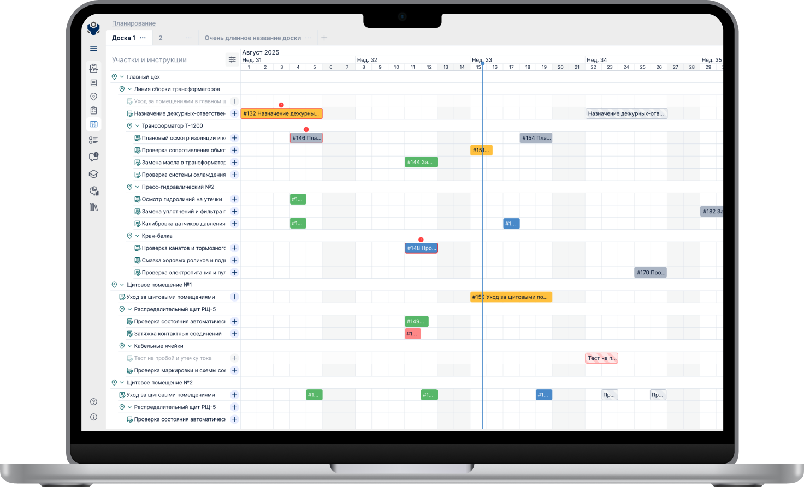
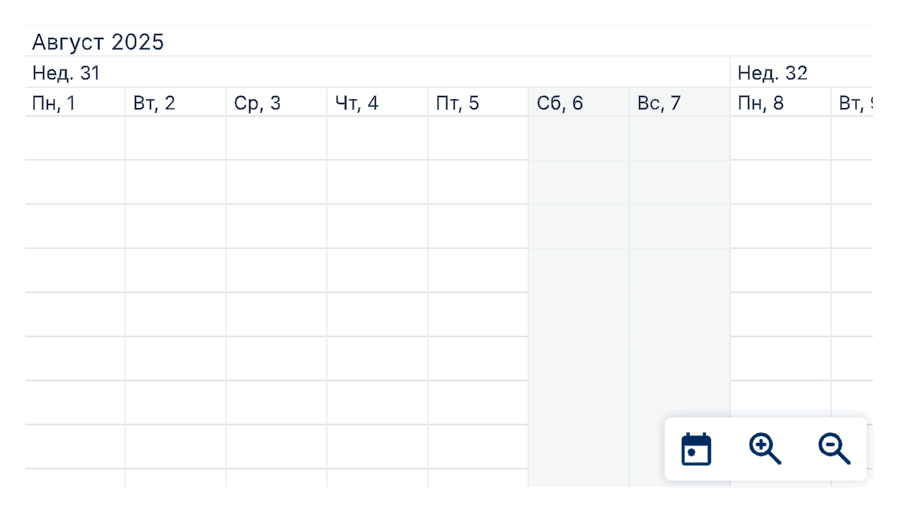
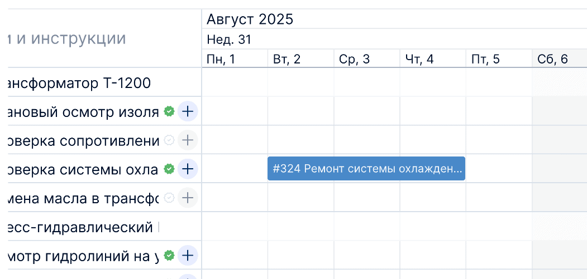
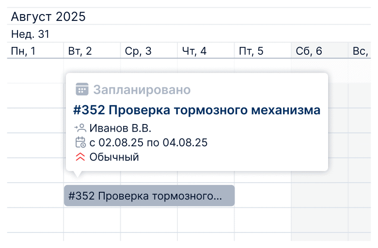
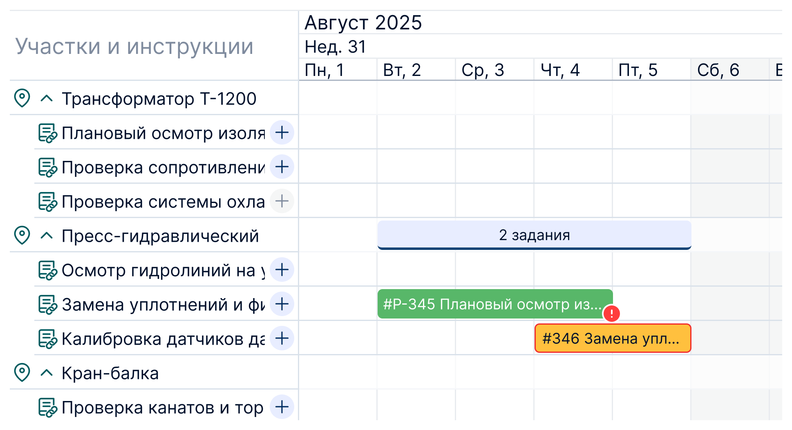
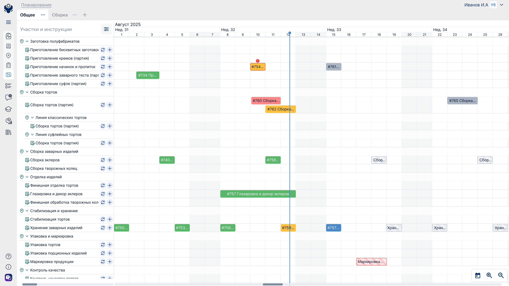
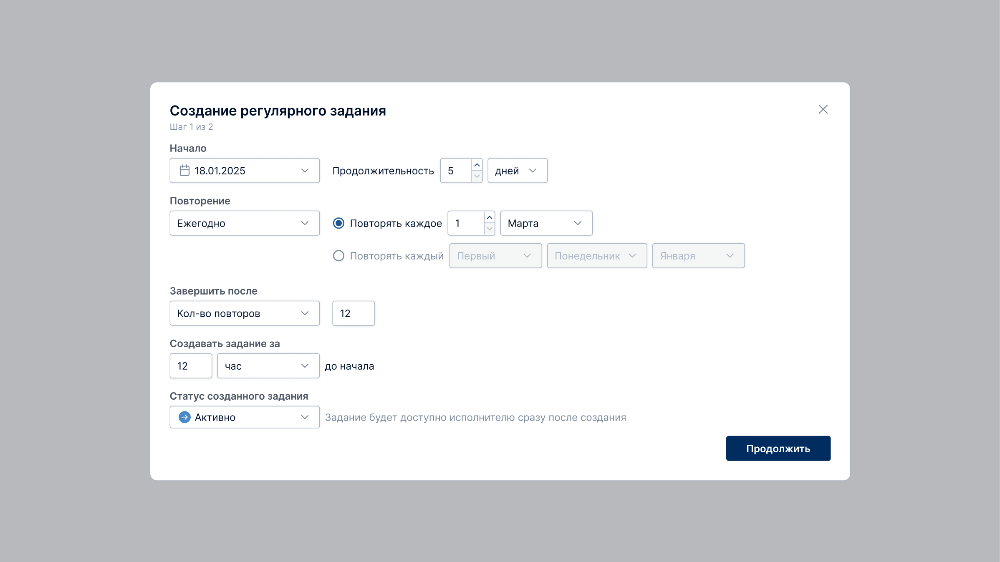
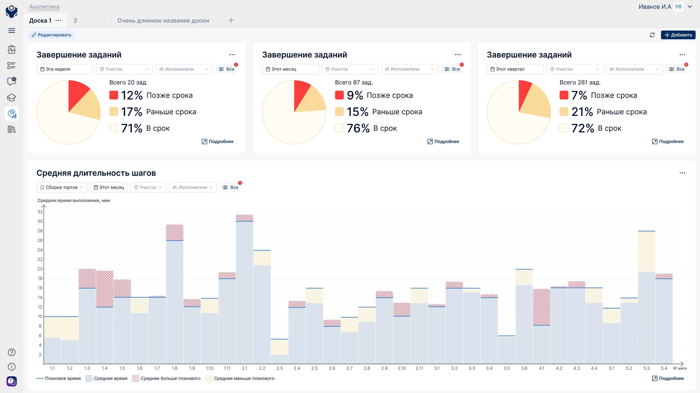
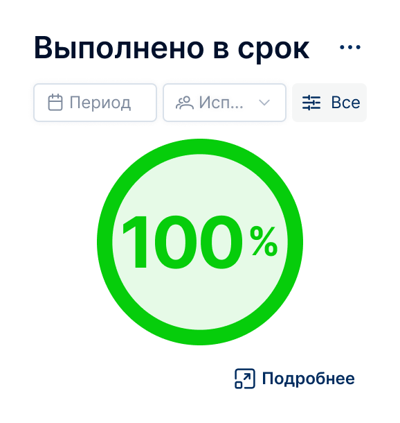
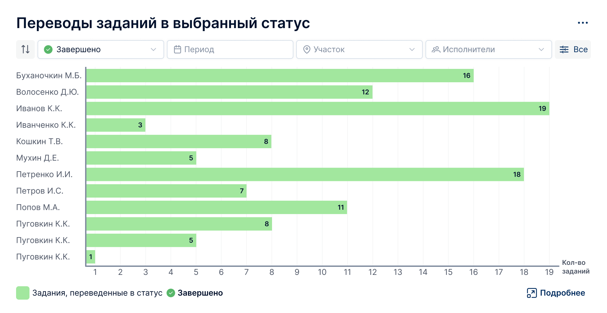

From manual scheduling to process management
How Gantt charts and analytics reduced planning time and made work easier to track

ServiceVizor is a digital assistant for manufacturing teams.
The product has two connected parts:
- A web service where technical specialists create work instructions, plan and assign tasks, and track progress;
- A mobile app where shop-floor operators complete tasks, answer instruction check questions, and record issues as they work.
This connects office planning with actual work on the shop floor. ServiceVizor aims to reduce errors and improve communication between office and production teams.
In brief
We designed planning and analytics tools for a manufacturing service: a Gantt view of tasks, recurring work, and customizable dashboards. Managers could plan inspections faster, track team capacity, and analyze how work was completed.
Context and problem
Our customers were maintenance and repair departments at factories. They conduct scheduled rounds: regular inspections, checks, and repairs.
Previously, managers only saw tasks in a list. They could not assess workload over time or spot scheduling conflicts. The system also lacked recurring tasks, so they had to create each repeat inspection manually.
Research
— Reviewed Jira, Weeek, and Excel to understand established chart interaction patterns.
— Interviewed two inspection managers about their day-to-day work.
— Interviewed a manager on our team who regularly used Gantt charts to learn which functions mattered most.
Findings from interviews and chart analysis
— Seeing workload over coming weeks and months helps managers allocate resources early and avoid schedule conflicts.
— Recurring tasks are the main type of work, far more common than one-off tasks. Flexible recurrence settings are therefore essential.
— Production teams currently use Excel and hand-drawn charts, which take time and invite errors.
— Creating tasks or changing dates by clicking a timeline is risky in large enterprises, where deliberate actions and avoiding accidental clicks matter.
— Seeing due dates alone is not enough. Managers also need to understand where delays occur, how work is distributed, and how actual progress compares with the plan.
MVP features
- Visual task planning with a Gantt chart to spot workload and overlaps quickly.
- Recurring tasks for scheduled inspection rounds.
- Easy date adjustments through drag&drop without extra steps.
Post-MVP features
Designing the features
Recurring tasks
Should recurring tasks be convertible to one-off tasks and vice versa? In manufacturing, regular inspection rounds and repairs triggered by faults are distinct types of work. We kept them separate, which sped up development and made the interface clearer.

Navigation and scale
- switching between week and month views
- jumping to today
- horizontal scrolling

Drag&Drop as a core interaction
Editing dates directly on the chart through drag&drop is the fastest way to adjust task durations and move tasks.

Design system
Typography, colors, buttons, and other basic elements came from the existing design system. We built task bars, tooltips, recurrence markers, and other components from those foundations to keep the interface consistent and easier to maintain.

Ideas we set aside
We considered a summary badge on each area row showing the total duration of nested tasks. It might have helped managers gauge workload without expanding the row, but deep nesting would put a heavy load on the system and the value was still hypothetical. We left it for later.

MVP solutions
Gantt chart for visual planning
— Color shows status: planned, active, in progress, complete, or interrupted. Overdue tasks also get an exclamation mark and red outline.
— Hovering reveals details in a tooltip; clicking opens the task card.
— Dates can be changed directly on the chart.


Post-MVP solutions
Widgets:
— Statistics on task start and completion dates
— Average step duration and variance from planned time
— Trends in a tracked metric
— Number of times each operator moved tasks into a selected status



Outcome
The project made schedules easier to understand, helped managers plan inspection rounds faster, and removed the routine of creating repeat tasks. It moved the product toward scalable planning and closer to new contracts.